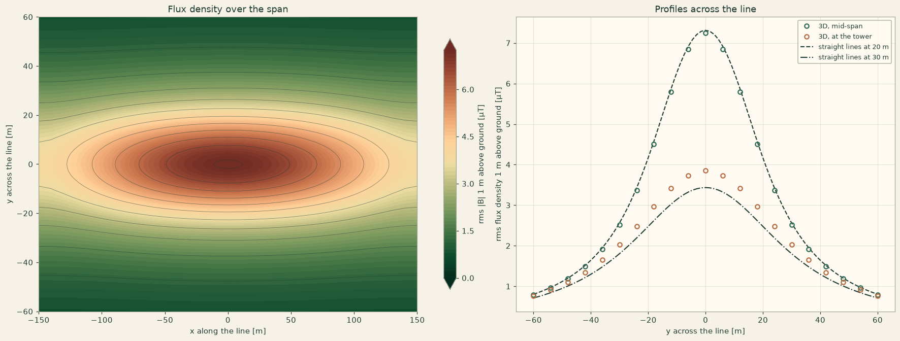
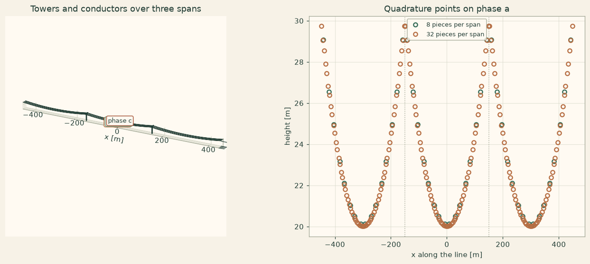

Docs › Examples › Magnetic field of a three-phase power line over three spans
Magnetostatics · 3D
Magnetic field of a three-phase power line over three spans
The 50 Hz magnetic field under a 400 kV line whose conductors sag between towers 300 m apart.

What it computes
OneSimulation reads the towers and the three sagging phase conductors from STEP files and integrates the 3D field of the phase currents with its Biot-Savart routine along the conductor centre lines over three spans; two quadrature parts of the 50 Hz cycle give the rms flux density over the ground. The script that builds the STEP file comes with the notebook.
What it checks
The rms flux density 1 m above ground peaks at 7.24 µT under the lowest point, 1.0 % below the straight-line field at 20 m, and falls to 3.85 µT at the tower, 12 % above the straight-line field at 30 m because the neighbouring sag pulls it up; 32 and 128 line pieces per span agree within 0.05 %.
Geometry
The notebook starts at the import of the CAD files power_line_magnetic_field_3d.step, power_line_magnetic_field_3d_phase_a.step, power_line_magnetic_field_3d_phase_b.step, power_line_magnetic_field_3d_phase_c.step: STEP (AP242), readable by any CAD program, with the names of the faces that the boundary conditions use. Put them next to the notebook.

The geometry script
The script power_line_magnetic_field_3d_geometry.py builds the geometry with the CAD objects of OneSimulation and writes the files. Change a dimension there, run it, and run the notebook again.
"""Geometry of the OneSimulation example "Magnetic field of a three-phase power line over three spans".
Builds two towers of a 400 kV line, 300 m apart, and the three phase conductors over the middle
span and the two neighbouring spans with the CAD objects of OneSimulation. Each tower is a mast
2 m square and 32 m high with a crossarm; the phases hang 9 m apart from the crossarm at 30 m and
sag in parabolic arcs to 20 m at mid-span. Each phase bundle is swept as a tube of its equivalent
radius 0.2 m along 60 straight pieces per span.
Files: power_line_magnetic_field_3d.step holds the two towers; power_line_magnetic_field_3d_phase_a.step,
_phase_b.step and _phase_c.step hold the three conductors.
"""
import numpy as np
from onesim.cad.d2 import Profile
from onesim.cad.d3 import Box, Sweep
span, attach, lowest, spacing, bundle = 300.0, 30.0, 20.0, 9.0, 0.2
towers = None
for x in (-span / 2, span / 2):
tower = Box(
length=2.0, width=2.0, height=attach + 2.0, origin=(x - 1.0, -1.0, 0.0)
) | Box(
length=1.5,
width=2 * spacing + 4.0,
height=1.5,
origin=(x - 0.75, -spacing - 2.0, attach),
)
towers = tower if towers is None else towers | tower
towers.save("power_line_magnetic_field_3d.step")
x = np.linspace(-1.5 * span, 1.5 * span, 181)
height = (
lowest
+ 4 * (attach - lowest) * ((np.mod(x + span / 2, span) - span / 2) / span) ** 2
)
for name, y in (("phase_a", -spacing), ("phase_b", 0.0), ("phase_c", spacing)):
path = tuple((float(a), y, float(b)) for a, b in zip(x, height))
Sweep(profile=Profile.circle(bundle), path=path).save(
f"power_line_magnetic_field_3d_{name}.step"
)The notebook
The complete notebook, cell by cell. Run it to produce the figures and the comparison printout.
A 400 kV line carries its three phase bundles in one horizontal row, 9 m apart. Between two towers 300 m apart the conductors sag from the crossarm at 30 m to 20 m above ground at mid-span, so the field on the ground changes along the span: it is strongest under the lowest point. Each phase carries \(I=1000\) A (rms) of a symmetric three-phase system, \(i_k(t)=\sqrt2I\cos(\omega t-2\pi k/3)\).
Air and ground are not magnetic, and at 50 Hz the currents induced in the ground spread over a depth of the order of a kilometre (Carson), so the field near the line is the free-space field of the conductor currents. OneSimulation integrates it in 3D with the Biot-Savart law along the centre lines of the conductors,
over the middle span and the two neighbouring ones. The steel of the towers is left out, and so are the shield wires, which carry no current in this model. The rms flux density follows from the two quadrature parts, \(B_\mathrm{rms}^2=\tfrac12\big(|\mathbf B(0)|^2+|\mathbf B(90°)|^2\big)\).
The towers come from power_line_magnetic_field_3d.step, the conductors from power_line_magnetic_field_3d_phase_a.step, _phase_b.step and _phase_c.step. The script power_line_magnetic_field_3d_geometry.py builds them with the CAD objects of OneSimulation.
Reference. Far from the towers the conductors are nearly straight and horizontal; the field of long straight currents at the local conductor height (Ampère's law, superposed; CIGRE Technical Brochure 373, 2009) is then a close estimate:
At mid-span it uses the lowest height (20 m), at the tower the attachment height (30 m); the sag makes the 3D field differ from both. A study over the number of line pieces checks the integration.
import numpy as np
from onesim.cad.exchange import load
from onesim.materials import VacuumPermeability
from onesim.physics.magnetostatics import magnetic_induction, polygon_line_quadrature
from onesim.visualization import plots, theme
theme.set()Geometry and line discretization
load returns the towers and the conductors. Span, attachment height and lowest point are read from the parts; the conductor centre lines are parabolic arcs through them. Each span is divided into straight pieces carrying a two-point Gauss rule.
towers = load("power_line_magnetic_field_3d.step")
phases = [
load(f"power_line_magnetic_field_3d_{name}.step")
for name in ("phase_a", "phase_b", "phase_c")
]
bundle = 0.2
span = towers.size[0] - 2.0
lowest = phases[0].bounding_box[0][2] + bundle
attach = phases[0].bounding_box[1][2] - bundle
lateral = [0.5 * (part.bounding_box[0][1] + part.bounding_box[1][1]) for part in phases]
sag_height = (
lambda x: lowest
+ 4 * (attach - lowest) * ((np.mod(x + span / 2, span) - span / 2) / span) ** 2
)
gauss, gauss_weights = (
np.array((0.5 - 0.5 / np.sqrt(3), 0.5 + 0.5 / np.sqrt(3))),
np.array((0.5, 0.5)),
)
pieces = (8, 32, 128)
lines = {
n: [
polygon_line_quadrature(
np.column_stack((x, np.full_like(x, y), sag_height(x))),
gauss,
gauss_weights,
closed=False,
)
for y in lateral
for x in (np.linspace(-1.5 * span, 1.5 * span, 3 * n + 1),)
]
for n in pieces
}
fig = plots.figure(1, 2, size=(15, 5.5))
plots.geometry(
[
towers.named("towers"),
*(
part.named(name)
for part, name in zip(phases, ("phase a", "phase b", "phase c"))
),
],
camera=plots.Camera(elevation=20, azimuth=-60),
title="Towers and conductors over three spans",
ax=fig[0],
)
plots.line(
points={
f"{n} pieces per span": (lines[n][0].points[:, 0], lines[n][0].points[:, 2])
for n in pieces[:2]
},
vlines=[-span / 2, span / 2],
xlabel="x along the line [m]",
ylabel="height [m]",
title="Quadrature points on phase a",
ax=fig[1],
)
plots.show()Field of the three phases
The field is linear in the currents: the field of each phase for 1 A is integrated once, and the instantaneous fields at \(\omega t=0\) and \(90°\) are their weighted sums.
current = 1000.0
mu0 = float(VacuumPermeability().evaluate())
weights = {
phase: np.sqrt(2) * current * np.cos(phase - 2 * np.pi * np.arange(3) / 3)
for phase in (0.0, np.pi / 2)
}
x_grid, y_grid = np.linspace(-150.0, 150.0, 31), np.linspace(-60.0, 60.0, 81)
ground = np.stack(np.meshgrid(x_grid, y_grid, indexing="ij"), axis=-1).reshape(-1, 2)
ground = np.column_stack((ground, np.ones(len(ground))))
unit_fields = {
n: [
magnetic_induction(ground, line.points, line.line_elements, permeability=mu0)
for line in lines[n]
]
for n in pieces
}
rms = {
n: np.sqrt(
0.5
* sum(
np.sum(
sum(w * B for w, B in zip(weights[phase], unit_fields[n])) ** 2, axis=1
)
for phase in weights
)
)
for n in pieces
}Results
The quadrature study at the strongest point, the field under the lowest point and at the tower against the straight-line estimate, and the change along the span.
line_field = (
lambda h, i: mu0
/ (2 * np.pi)
* np.sum(
i * 1j / np.conj(y_grid[:, None] + 1j - (np.array(lateral) + 1j * h)), axis=1
)
)
straight = lambda h: np.sqrt(
0.5 * sum(np.abs(line_field(h, i)) ** 2 for i in weights.values())
)
finest = rms[pieces[-1]].reshape(len(x_grid), len(y_grid))
peak = np.argmax(rms[pieces[-1]])
print("pieces per span largest rms flux density 1 m above ground [µT]")
for n in pieces:
print(
f"{n:15d} {1e6 * rms[n][peak]:20.4f} ({100 * (rms[n][peak] / rms[pieces[-1]][peak] - 1):+.4f} % from the finest)"
)
mid, tower = np.argmin(np.abs(x_grid)), np.argmin(np.abs(x_grid - span / 2))
for label, row, z in (("mid-span", mid, lowest), ("at the tower", tower, attach)):
estimate = straight(z)
print(
f"{label:13s}: largest {1e6 * finest[row].max():.3f} µT, straight lines at {z:.0f} m {1e6 * estimate.max():.3f} µT "
f"({100 * (finest[row].max() / estimate.max() - 1):+.1f} %)"
)
print(
f"the field under the lowest point is {finest[mid].max() / finest[tower].max():.2f} times the field at the tower; "
"public reference level (ICNIRP 2010, 50 Hz): 200 µT"
)Figure
The rms flux density 1 m above ground over the middle span, and the profiles across the line at mid-span and at the tower against the straight-line estimates.
fig = plots.figure(1, 2, size=(16, 6))
plots.heatmap(
x_grid,
y_grid,
1e6 * finest,
limits=(0, 1e6 * finest.max()),
contours=10,
label="rms |B| 1 m above ground [µT]",
xlabel="x along the line [m]",
ylabel="y across the line [m]",
title="Flux density over the span",
aspect="auto",
ax=fig[0],
)
plots.line(
points={
"3D, mid-span": (y_grid[::4], 1e6 * finest[mid, ::4]),
"3D, at the tower": (y_grid[::4], 1e6 * finest[tower, ::4]),
},
reference={
f"straight lines at {lowest:.0f} m": (y_grid, 1e6 * straight(lowest)),
f"straight lines at {attach:.0f} m": (y_grid, 1e6 * straight(attach)),
},
xlabel="y across the line [m]",
ylabel="rms flux density 1 m above ground [µT]",
title="Profiles across the line",
ax=fig[1],
)
plots.show()Going further
Add a second circuit with reversed phase order in power_line_magnetic_field_3d_geometry.py to see the field drop away from the line, give the shield wires their induced currents, or raise the lowest point to find the height at which the field under the line stays below a design value.